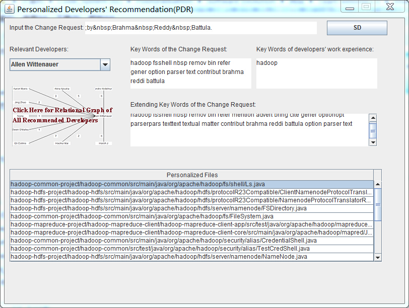
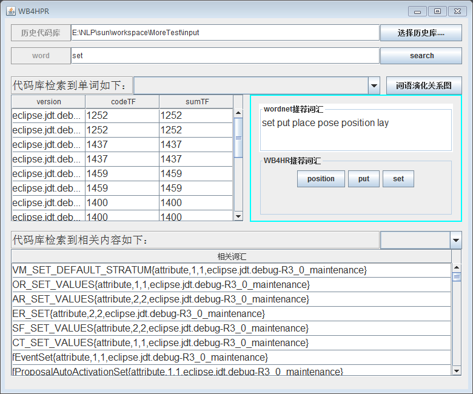
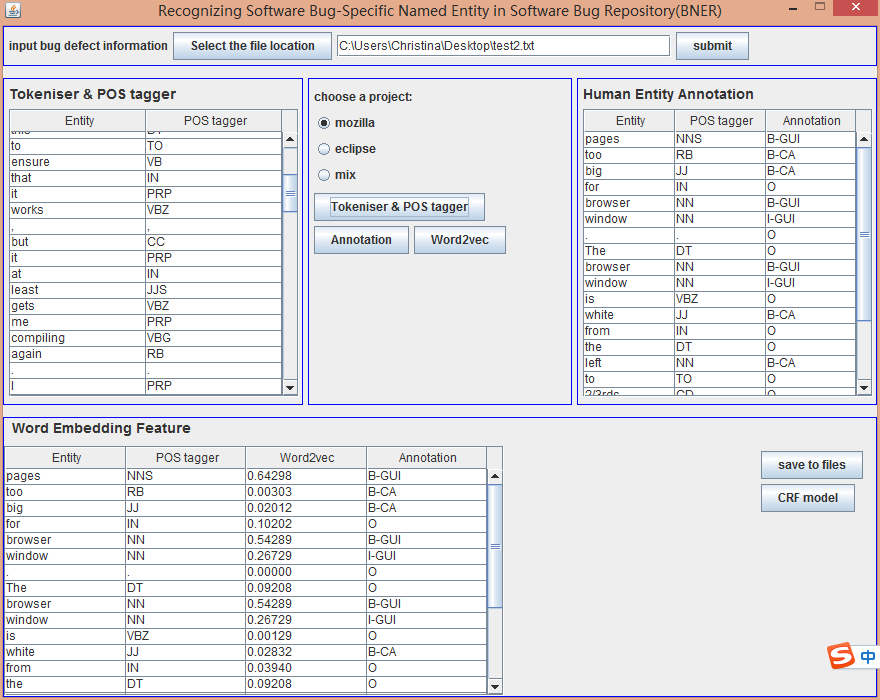
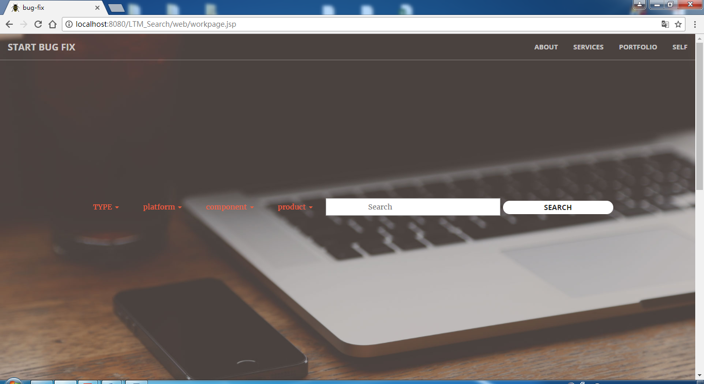
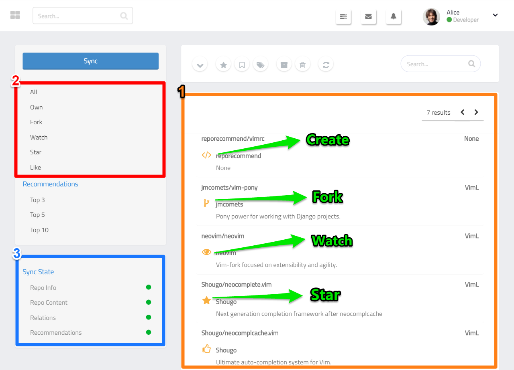
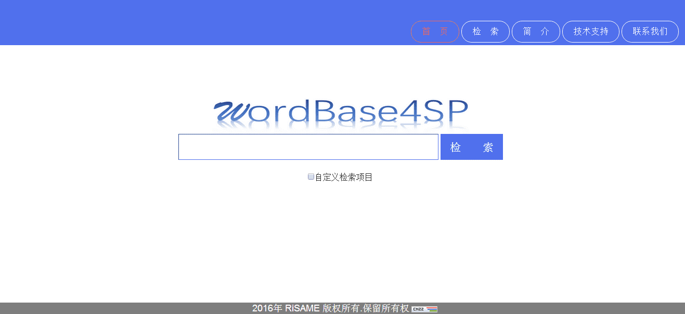

工具
-
开发者个性化推荐技术的研究
-
具体软件历史代码库的词库自动构建方案与工具实现
-
面向多源数据的软件缺陷领域的命名实体识别平台
-
基于知识图谱的bug问题搜索系统
-
基于GitHub的个性化软件仓库推荐系统
-
面向软件开发领域的词库自动构建平台
实验数据
CSDNSoftware Engineering Academic Genealogy (by Tao Xie)
Advice for Researchers and Students (by Tao Xie)
Journals and Conferences recommended by CCF
顶级会议 |
|
| A | International Conference on Software Engineering |
| A | ACM SIGSOFT Symposium on the Foundation of Software Engineering/ European Software Engineering |
| A | Conference on Object-Oriented Programming Systems,Languages, and Applications |
| A | ACM SIGPLAN Symposium on Programming Language Design & Implementation |
| A | ACM SIGPLAN-SIGACT Symposium on Principles of Programming Languages |
| A | International Conference on Automated Software Engineering |
| B | European Conference on Object-Oriented Programming |
| B | International Symposium on Software Reliability Engineering |
| B | European Joint Conferences on Theory and Practice of Software |
| B | IEEE International Conference on Program Comprehension |
| B | IEEE International Requirement Engineering Conference |
| B | International. Conference on Software Maintenance and Evolution |
| B | International Symposium on Software Testing and Analysi |
| B | International Conference on Software Analysis, Evolution, and Reengineering |
| B | Fundamental Approaches to Software Engineering Conference |
| B | International Conference on Ealuation and Assessment in Software Enginnering |
| B | The IEEE International Conference on Software Testing, Verification and Validation |
| B | Symposium On Applied Computing |
| C | ACMSIGPLAN-SIGSOFT Workshop on Program Analysis for Software Tools and Engineering |
| C | Asian Symposium on Programming Languages and Systems |
| C | Asia-Pacific Software Engineering Conference |
| C | International Computer Software and Applications |
| C | IEEE International Working Conference on Source Code Analysis and Manipulation |
| C | International Conference on Software Quality， Reliability, and Security |
| C | International Conference on Software Engineering and Knowledge Engineering |
| C | International Conference on Software Reuse |
| C | International Symposium on Theoretical Aspects of Software Engineering |
| C | International Symposium on Empirical Software Engineering and Measurement |
期刊分类 |
|
| A | IEEE TRANSACTIONS ON SOFTWARE ENGINEERING |
| A | COMMUNICATIONS OF THE ACM |
| A | JOURNAL OF THE ACM |
| A | COMPUTER |
| A | ACM Computing Survey |
| A | ACM TRANSACTIONS ON PROGRAMMING LANGUAGES AND SYSTEMS |
| A | ACM TRANSACTIONS ON SOFTWARE ENGINEERING AND METHODOLOGY |
| B | IEEE TRANSACTIONS ON SERVICES COMPUTING |
| B | IEEE TRANSACTIONS ON RELIABILITY |
| B | Science China Information Science |
| B | information science |
| B | information system |
| B | IEEE SOFTWARE |
| B | INFORMATION AND SOFTWARE TECHNOLOGY |
| B | AUTOMATED SOFTWARE ENGINEERING |
| B | JOURNAL OF SOFTWARE-EVOLUTION AND PROCESS |
| B | SOFTWARE AND SYSTEMS MODELING |
| B | EMPIRICAL SOFTWARE ENGINEERING |
| B | JOURNAL OF SYSTEMS AND SOFTWARE |
| B | REQUIREMENTS ENGINEERING |
| B | SOFTWARE TESTING VERIFICATION & RELIABILITY |
| B | SOFTWARE-PRACTICE & EXPERIENCE |
| B | SOFTWARE QUALITY JOURNAL |
| B | COMPUTER JOURNAL |
| B | IET SOFTWARE |
| B | SCIENCE OF COMPUTER PROGRAMMING |
| B | JOURNAL OF COMPUTER SCIENCE AND TECHNOLOGY |
| B | ADVANCES IN COMPUTERS |
| C | ADVANCES IN ENGINEERING SOFTWARE |
| C | COMPUTER LANGUAGES SYSTEMS & STRUCTURES |
| C | COMPUTER SCIENCE AND INFORMATION SYSTEMS |
| C | INTERNATIONAL JOURNAL OF SOFTWARE ENGINEERING AND KNOWLEDGE ENGINEERING |
| C | Frontier of computer science |